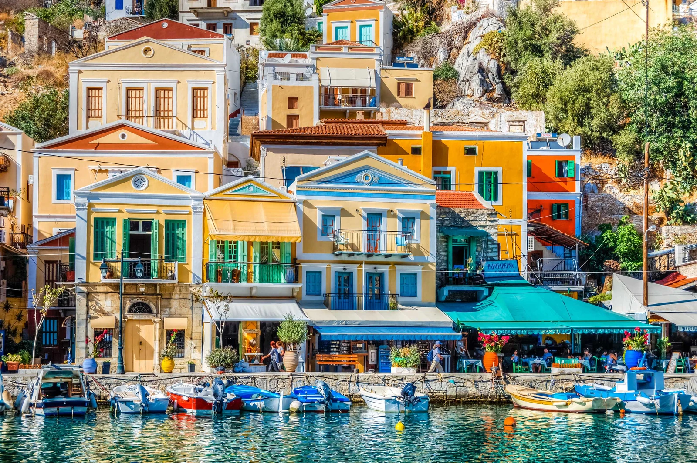
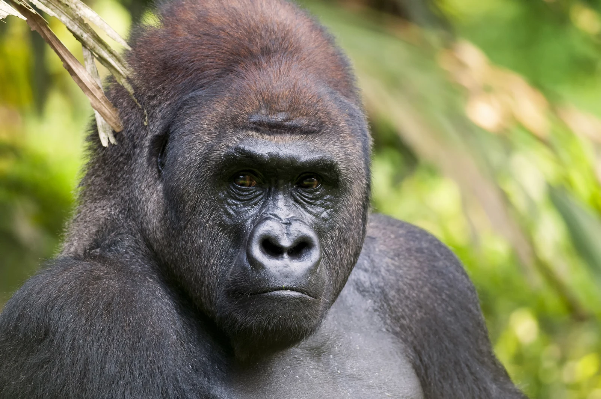
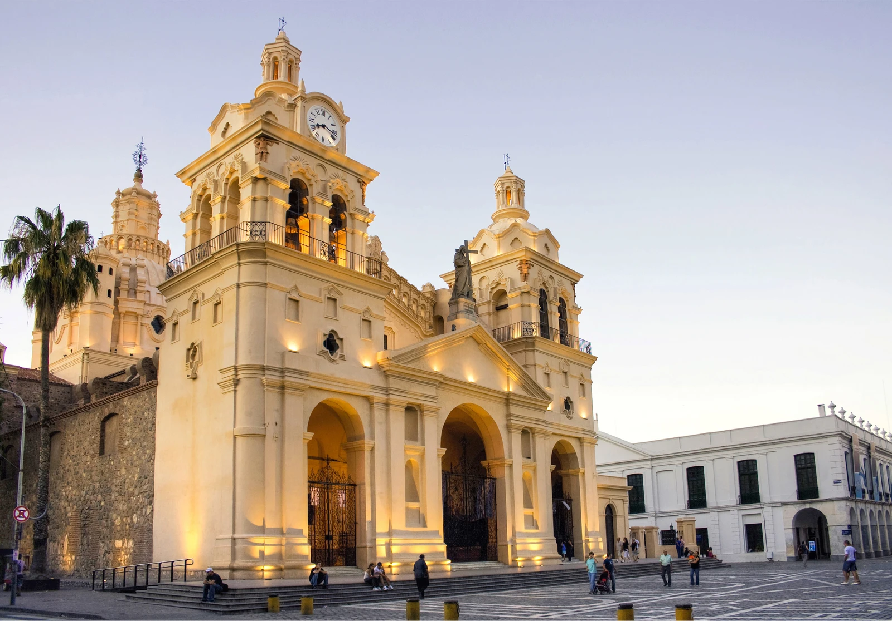
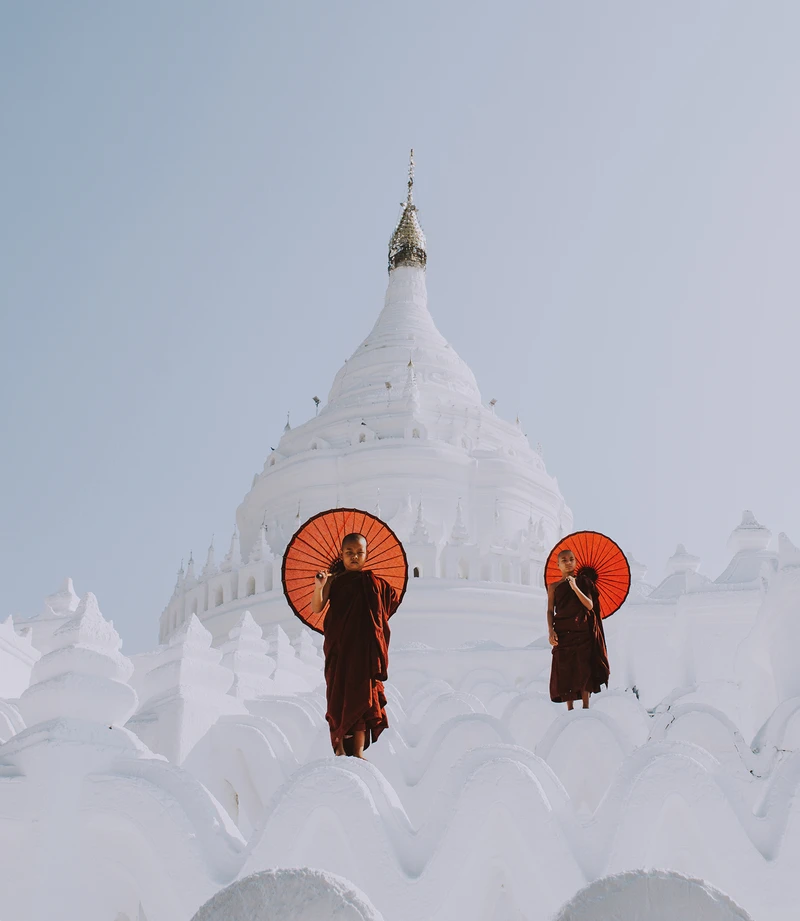
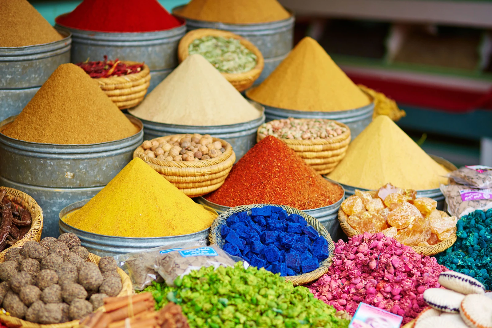
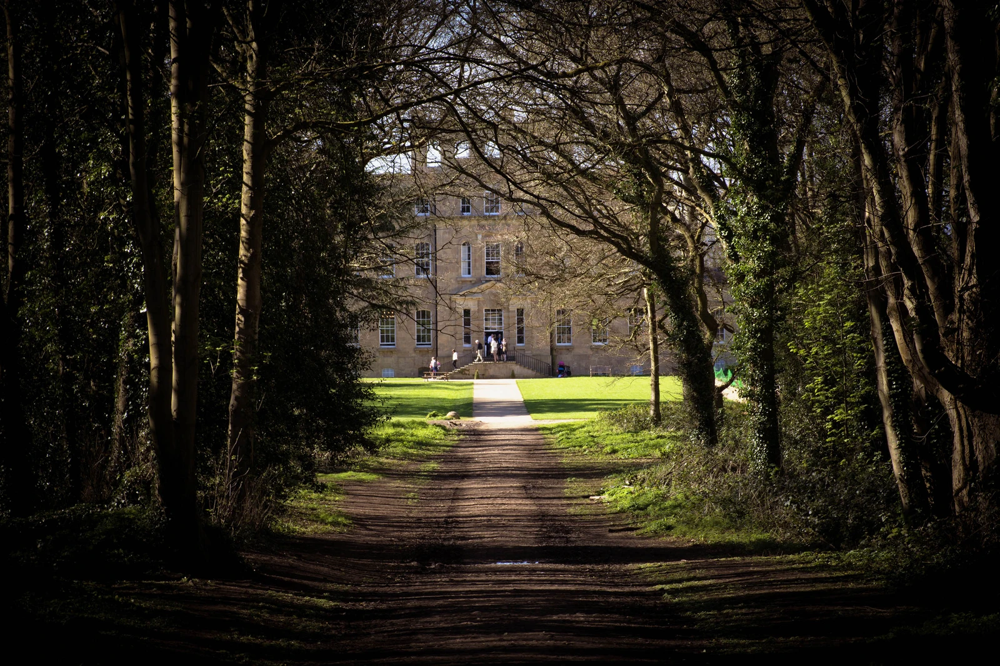
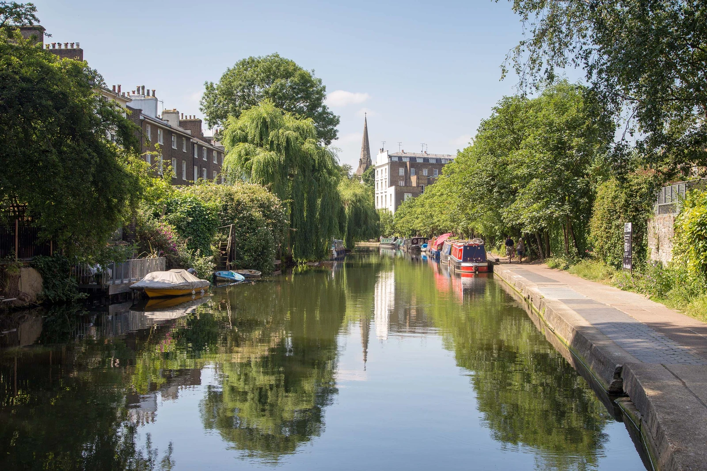
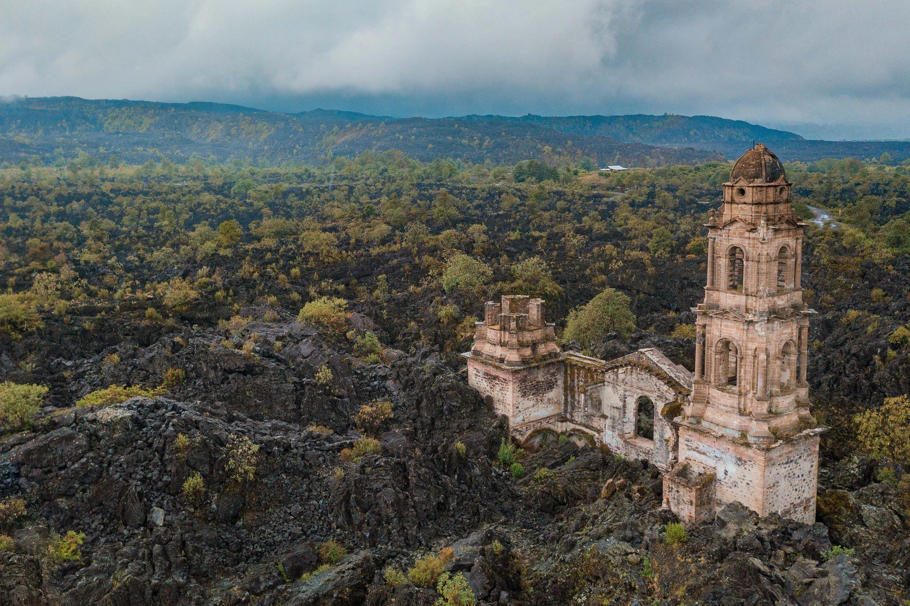
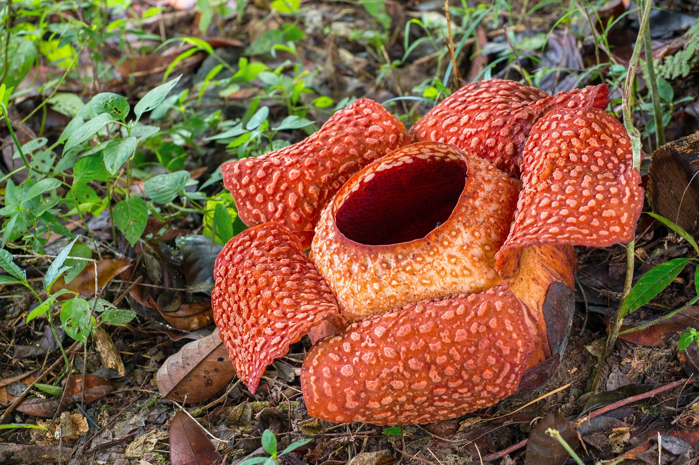

I always crave travel experiences that go beyond the usual tourist spots. Let me introduce you to my favorite hidden gems around the world.
Because if you ask me, this is what traveling should truly be about. To get a
way from the beaten path and toward authentic, new experiences.
Hidden gems are secret places that will get you rare, unforgettable moments that
become stories for a lifetime. Think about stumbling upon a charming local cafe,
hiking through pristine forests, or being invited to a traditional festival by friendly locals. These are the experiences that define a journey in my opinion.

Admire the Neoclassical in Symi, Greece
My travel secret is the little Greek island of Symi, off Rhodes, which has arguably the most spectacular harbour in the country, entirely surrounded by Neoclassical houses.

Go wild in Maya Nord in the Republic of Congo
Maya Nord is not a travel destination for the faint-hearted, more for the adventurous and intrepid with a hint of the hidden explorer in them. It is a bai or open clearing in the forests of Odzala-Kokoua National Park, in the Republic of Congo.

Explore colonial architecture in overlooked Córdoba
Popular with Argentines, but often overlooked by foreign travellers, Córdoba province i san incredibly rewarding place to explore.
Its eponymous capital is a youthful, forward-lookingcity, packed with colonial-era architecture, art and cultural spaces.

Explore hidden niches at the Hsinbyume Pagoda, Burma
A lot of visitors to Mandalay in Myanmar (Burma) visit the well-known temples.
But the Hsinbyume Pagoda on the western back of the Irrawaddy is a real hidden gem (it’s also called Mya Thein Tan, which translates as 100,000 emeralds).

Shop for traditional crafts in Morocco
Shop with a conscience in Morocco. There are numerous Fairtrade cooperatives and associations in Morocco, which are worth seeking out. Visiting them often means meeting locals, as well as buying beautiful crafts or delicious
food to benefit the community.

Step back in time at the Kings Weston estate in Bristol
My backyard overlooks the sprawling Blaise and Kings Weston estates in north Bristol. In the 18th century, their woodlands, river-carved gorges and views over the Severn Estuary were internationally famous, visited by European nobility and admired by Jane Austen.

Recharge at the Towpath Café in east London
Every spring the Towpath Cafe on Regent’s Canal near Haggerston quietly opens its shutters and you can find the most delicious seasonal food served there until late autumn.
After a shoot it’s where I head to recharge and watch the wildlife and the light refracting on the water.

Go horseback riding in the Paricutín’s lava fields, Mexico
The hamlet of San Juan Parangaricutiro in Michoacán was almost entirely engulfed by a cataclysmic volcanic eruption in 1943.

See the flower with the largest bloom in the world in the Cameron Highlands, Malaysia
A trek through the Cameron Highlands can bring many highlights, one of which is finding the rare Rafflesia